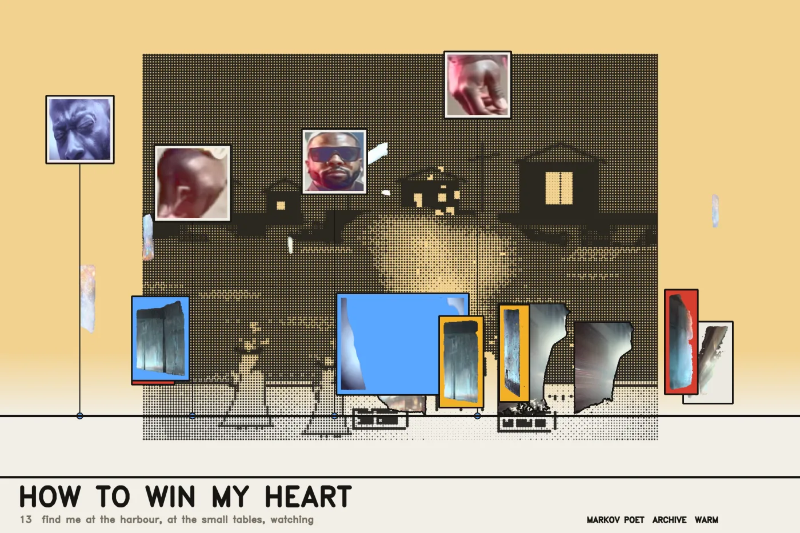
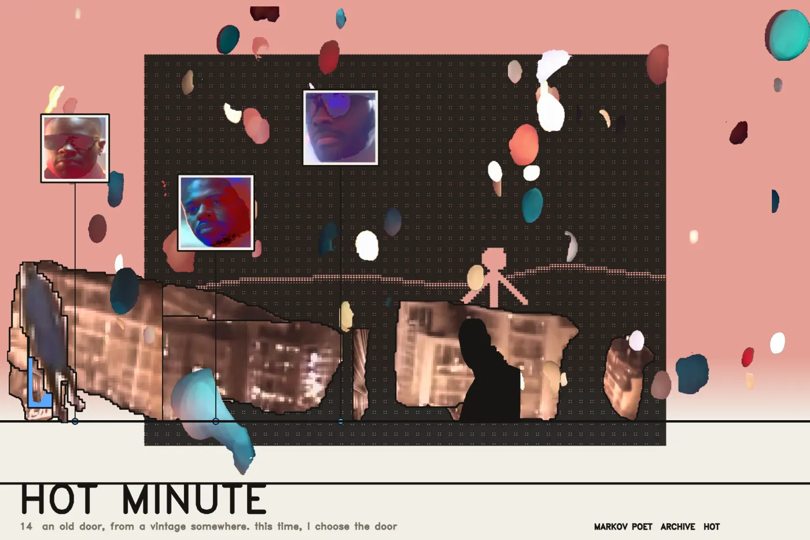

THE CITY — fourteen sheets
Archigram's Instant City is a drawn armature on white paper, photographic people along a ground line, faces in framed panels on leader lines, and flat colour that belongs to no photograph. This project had already built every one of those materials for other reasons: cream #f2efe6, ink #161513, eight levels and one accent; a halfworld renderer that computes structures instead of drawing them; and 2,033 cut-outs from SAM 3.
Every earlier collage refused to move anything, because where an element sat was a measurement. These compose. The rules of placement are still measurements, but they decide arrangement rather than forbid it:
- Only figures with grounded.bottom < 0.12 stand on the ground line. One cut off at the frame edge has no feet and can only float.
- Only elements with tone.range > 0.22 are printed photographically. Below that there is nothing inside them — the man at the window spans 0.030 — so they go in as flat ink, which is what they actually are.
- Every third figure is drawn, not printed, put through the same beflix dot law that made footage and halfworld one surface. Halftone and photograph on one sheet is the Archigram move, and here they are the same two inks.
- The sky is keyed to the poem's register — COLD, WARM, HOT, PALE — so the suite reads as a set without any sheet being coloured by hand.



